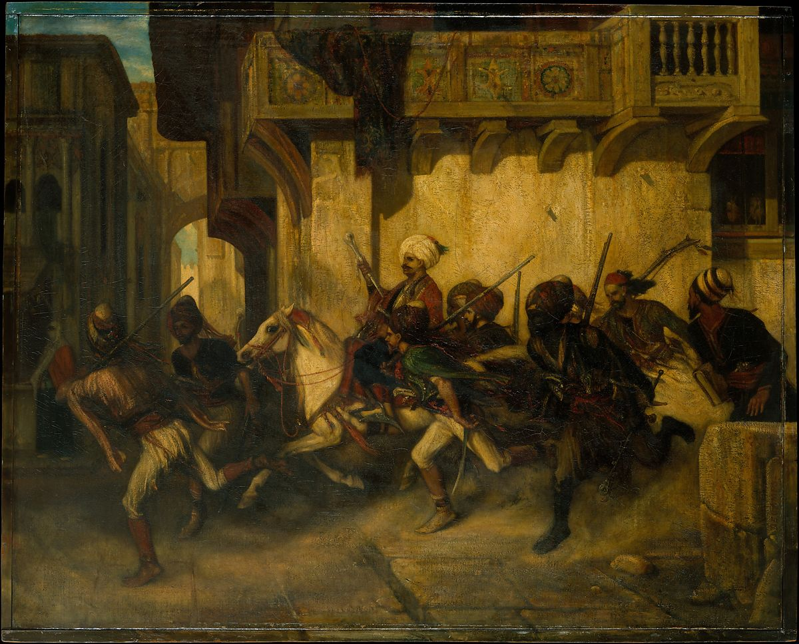

<head>
<meta charset="UTF-8" />
<meta name="keywords" content="drawing, painting" />
<meta name="description" content="drawings by Sunjy" />
<title>Sunjy</title>
<link rel="shortcut icon" type="image/x-icon" href="../../mImages/mCommon/favicon.ico" media="screen" />
<link rel="stylesheet" type="text/css" href="../../mCsses/mCommon/mCssA.css" />
<link rel="stylesheet" type="text/css" href="../../mCsses/mCommon/mCssB.css" />
<link rel="stylesheet" type="text/css" href="../../mCsses/mCommon/mCssC.css" />
<link rel="stylesheet" type="text/css" href="../../mCsses/mCommon/mCssD.css" />
<link rel="stylesheet" type="text/css" href="../../mCsses/mContent/mCssA.css" />
<link rel="stylesheet" type="text/css" href="../../mCsses/mContent/mCssB.css" />
<link rel="stylesheet" type="text/css" href="../../mCsses/mContent/mCssC.css" />
<link rel="stylesheet" type="text/css" href="../../mCsses/mContent/mCssD.css" />
</head>
<script type="text/javascript" src="../../mScripts/mContent/mContentAA.js" /></script>
<script type="text/javascript" src="../../mScripts/mContent/mContentAB.js" /></script>
<script type="text/javascript" src="../../mScripts/mContent/mContentAC.js" /></script>
<script type="text/javascript" src="../../mScripts/mContent/mContentAD.js" /></script>
<script type="text/javascript"></script> 
<script type="text/javascript">
document.write('<div class="mImgAbsolute"></div>');
/*
document.write('<p class="mFontSizeBColor" />From a white paper...</p>');
document.write('<table class="center"><tr><td>');
document.write('');
document.write('</td></tr></table>');
*/
</script>


<script type="text/javascript">
document.write('<p class="mFontSizeBColor" />The Turkish Patrol</p>');
document.write('<p class="mFontSizeSColor" />By Alexandre-Gabriel Decamps. The present picture depicts Turkish military patrols making their rounds at Smyrna—now Izmir—which Decamps visited in 1828. It is a late variant of his first major Orientalist subject, exhibited at the Paris Salon of 1831 (now in the Wallace Collection, London). Decamps belonged to the first generation of French painters to popularize scenes of everyday life set in the Middle East. <br><br>This painting belonged to the Metropolitan Museum&#39;s first president, John Taylor Johnston, until 1876, when it was purchased by Catharine Lorillard Wolfe, the Museum&#39;s first woman benefactor.</p>');
document.write('<table class="center" /><tr><td>');
document.write('<br>This painting belonged to the Metropolitan Museum&#39;s first president, John Taylor Johnston, until 1876, when it was purchased by Catharine Lorillard Wolfe, the Museum&#39;s first woman benefactor." />');
document.write('</td></tr></table>');
</script>


